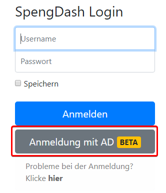

Du kannst dich auf der Anmeldeseite mit deinem SpengDash-Account anmelden.
(Dieser ist nicht dein Spengergasse-Account).
Wenn du dein Passwort vergessen hast, kontaktiere einen Administrator.
Im Rahmen einer neuen BETA-Funktion kannst du dich nun auf SpengDash mit deinem Spengergasse-Account anmelden. Gib dafür deine Spengergasse-Zugangsdaten ein und klicke auf den Knopf "Anmeldung mit AD" auf der Anmeldeseite:
